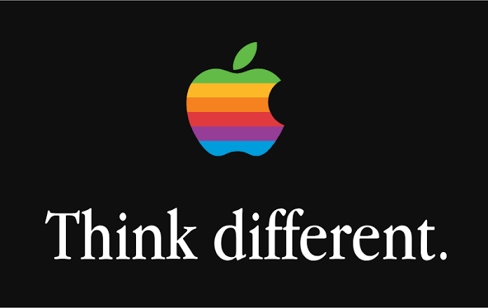

Apple 50 | Gondolkozz Másképpen
Jobs visszatérése az Apple-hez 1997-ben sokak szerint egy fordulópont az Apple történetében, az aranykoruk felé. Ezt, azonban főként egy dolog okozta:
Jobs zseniális marketing tudása, és karizmája.
Jobs amint visszatért a vezérigazgató szerepébe, kivonta az összes szerinte rossz terméket ami Sculley idejében készült a forgalomból, és teljesen újrakezdte az Apple hírnevének felépítését egy újabb, modernebb megközelítéssel.
Az első lépés ehhez az új identitáshoz egy új szlogen választása volt, amiről fel lehetett ismerni az Apple-t. Craig Tanimoto, a TBWA\Chiat\Day reklámügynökség egyik tervezője a következő szlogent készítette: Think Different szimpla, egyszerű, viszont megragadó. Ez a két szó az Apple marketing kampányának nagy része volt egészen 2002-ig.

Egy kép az Apple híres 'Think Different' marketing kampányáról. Kép: Stoopkitty / Wikimedia Commons. Licensz: Public Domain.
Jobs sokat dolgozott az Apple hírnevének újjáépítésében, és sikert is lelt benne! 1998-ban az Apple egy olyan számítógépet készített, ami tényleg megmutatta, hogy mi is lehet a személyi számítógép.
Következő Fejezet →